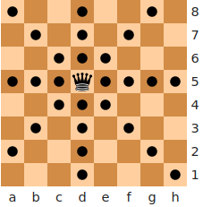
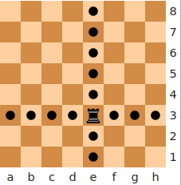
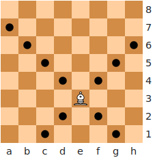
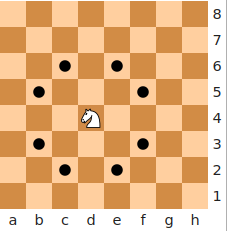
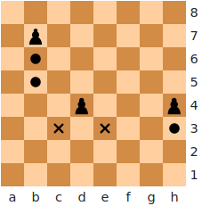

Programme d'informatique du CÉGEP de Limoilou
Sommaire
- Préparation de l’échiquier
-
Règles du jeu
-
Règles générales - Déplacement des pièces
- Le roi
- La dame
- La tour
- Le fou
- Le cavalier
- Le pion
-
Règles spéciales
- Promotion
- En passant
- Le Roque
-
Règles générales - Déplacement des pièces
-
Fin de la partie
- Échec et mat
- Partie nulle
- Progresser aux Échecs
- Informations additionnelles
Préparation de l’échiquier
Au début de chaque partie, l'échiquier doit être placé de sorte que le coin inférieur droite à une case blanche pour chaque camp du joueur. La position initiale des pièces est telle que la Reine blanche doit se trouver sur une case blanche et la Reine noire sur une case noire. A sa droite le Roi, puis le Fou, puis le Cavalier, puis la Tour. A la gauche de la Reine l'autre Fou, puis l'autre Cavalier, puis la deuxième Tour.
Note: Il faut faire attention que la dame (reine) blanche sur case blanche, dame noire sur case noire.Voici un diagramme démontrant la position initiale de l'échiquier :
Le joueur qui a les pièces blanches joue toujours en premier.
Cela constitue un petit avantage, parce que le joueur va avoir l’opportunité de développer ses
pièces plus vite.
Notation algébrique
Pour noter le coup d'un joueur dans la notation algébrique, on indique :
- La nature de la pièce (par son code ou rien pour le pion).
- On note la pricse/capture par la lettre x.
- Et les coordonnées de la case d'arrivée.
Règles du jeu
Règles générales: Déplacement des pièces
Aux Échecs, chaque pièce à un déplacement différent de l'autre. C'est bien de noter d'abord que la seule pièce qui peut sauter par-dessus des autres pièces est le cavalier. Par contre, tous les pièces ne peuvent jamais partager une case avec une pièce de leur propre camp (c.à.d un pièce de la même couleur), main celles-ci peuvent prendre la place d’une pièce de l'aversaire en la capturant. En générale, le déplacement des pièces à plusieur motifs:
- Aider leurs alliées à defendre une position ou défendre contre la capture.
- Les mettre en position d’en capturer une autre pièce adverse.
- Atteindre une position stratégique (contrôler des cases importantes).
 Le roi
Le roi
Le roi peut bouger une seule case dans n'importe quelle direction:
-
Horizontalement:
- Vers la droite
- Vers la gauche
-
Verticalement:
- Vers le bas
- Vers la gauche
- Diagonale: en forme de X
 La dame/reine
La dame/reine
La plus pièce forte du jeu est la dame (reine). Son déplacement est identique à celui du roi, donc elle peut se déplacer dans toutes les directions, sauf qu'elle puisse se déplacer aussi loin que le joueur le souhaite à condition de ne pas passer par-dessus d’autres pièces alliées. Elle peut capturer une pièce adverse; dans ce cas, elle doit s'arrêter sur la case de la capture.
 La tour
La tour
La tour se déplace aussi loin que l'on désire mais seulement horizontalement (vers le côtés: droite ou gauche) et verticalement (vers le bas et le haut).
 Le fou
Le fou
Le fou se déplace aussi loin que l'on désire, main juste en mouvement diagonale. L'élément unique des foux c'est que chacun à sa propre couleur, alors dès le début du jeu, il y aura toujours deux fous de couleurs distinctes (blanc et noire) en sorte que chacun d'eux ne quittera jamais sa case correspondante (blanc ou noire).
 Le cavalier
Le cavalier
Les cavaliers sont très unique à propos de leurs déplacement. Ils se déplacent d'une manière complètement différent des autres pièces : ils bougent de deux cases dans une direction, puis d’une à 90 degrés (imagine la forme de la lettre "L" en majuscule). En plus, ils sont les seuls pièces autorisées à passer par-dessus les autres pièces (alliées et adverses).
 Le pion
Le pion
Les pions sont les plus faibles au debut, mais pas nécessairement pour tout le jeu ! D'abord, ils ne capturent pas de la même manière qu’ils se déplacent : ils avance seulement une seule case à moins que c'est leur premier déplacement; dans ce cas, un pion peut se deplacer deux cases au debut du jeu. Il capture (attaque) en diagonale sur l’une des deux cases situées en diagonale devant eux. Ils ne peuvent capturer en arrière. Lorsqu’une pièce adverse ou un alliée se trouve sur la case juste devant eux, ils seront bloqués, et parsuite ni la capture ni le saut par-dessus marche dans cette position.
Règles spéciales
Des règles spéciales ont été conçues pour le jeu afin de la rendre plus intéressante et amusante:
Promotion
La 1ère règle spéciale est la suivante: si un pion atteint la dernière rangé ou ligne, il peut faire ce qu'on appelle une promotion, donc ça sera possible pour lui de devenir n’importe quelle autre pièce (dame, tour, fou, cavalier), à l’exception du roi. Seuls les pions peuvent être promus.
En passant (e.p.)
En passant ou "la prise en passant" apparaître lorsqu’un pion avance de deux cases à son premier coup, et ce faisant se retrouve à côté d’un pion de l’adversaire qui ne peut donc plus le capturer de manière classique, cet autre pion à la possibilité de capturer le premier e.p., comme s’il ne s’était déplacé que d’une case. Ce coup spécial doit être joué immédiatement, dans le tour qui suit le départ du pion pris.

- Le diagramme montre d'abord la position avant la prise en passant.
- Le pion noir avance de deux cases (cases d7-d5).
- Le pion noir est pris par le pion blanc sur la case d6 car le pion noir est d'abord passé
sur la case d6 pour se rendre sur la case d5.
Cette prise n'est valable qu'après le déplacement du pion, elle ne sera plus possible au tour d'après.
Le Roque
Une autre règle spéciale s’appelle le roque. Ça permettre de mettre le roi à l’abri et faire entrer une tour dans le jeu en la sortant de son coin. Le joueur déplace son roi de deux cases à droite ou à gauche, puis pose la tour sur la case située immédiatement de l’autre côté de celui-ci. Attention, pour pouvoir roquer, Il y a quelques conditions qui doivent être respectées :
- Il doit s’agir du premier déplacement du roi.
- Il doit s’agir du premier coup de la tour concernée.
- Pour roquer, aucune pièce ne doit se trouver entre le roi et la tour.
- Le roi ne peut pas se placer en échec ni traverser une ligne d'échec.
Fin de la partie
Échec et mat
Le but du jeu est de mettre le roi adverse en position échec et mat. Cela se produit lorsque le roi est mis en échec et ne peut pas s’échapper par n'importe quel moyen. Il n’y a que trois façons de sauver le roi quand il est en échec :
- Le déplacer sans roquer.
- Bloquer la ligne d'attaque: parer l'échec avec une autre pièce.
- Capturer la pièce qui donne l’échec.
Partie nulle
Parfois, il n'y a de victoire, donc la partie est déclarée nulle. Il existe 5 manières d’arriver à une telle situation :
- Le jeu aboutit à une impasse quand l’un des deux joueurs ne peut effectuer de coup légal à son tour de jeu, bien que son roi ne soit pas en échec. C’est ce qu’on appelle le pat (stalemate en anglais).
- Les deux joueurs peuvent se mettre en accord pour décalrer une partie nulle.
- Il n’y a pas suffisamment de pièces sur l’échiquier pour forcer un mat.
- Lorsqu'une même position est répétée "trois fois"1* mais pas nécessairement trois fois de suite.
- Cinquante coups ont été joués sans qu'un pion ait été déplacé ni qu'une capture de pièce ait eu lieu.
Progresser aux Échecs
Il y a plusieurs méthodes pour progresser au jeu. Le plus important est de s'amuser en
jouant.
La liste non exhaustive suivante en cite quelques une :
- Jouer avec différents niveaux de joueurs.
- Etudier les ouvertures. Parmi les ouverturs populaires:
- Résoudre des problèmes2* afin d'améliorer la vision et la capacité de calcul.
- Analyser ses parties pour apprendre des nos erreurs.
- Lire des livres :
Informations additionnelles
1* : Threefold Repetition.
2* : Il y a beacoup des ressources pour essayer de resoudre des problèmes. Game Knot est l'un de ces ressources.
3* : Robert James Fischer, dit Bobby Fischer, né le 9 mars 1943 est un joueur d'échecs américain. Il est devenu le champion du monde en 1972.
"A thorough knowledge of the elements takes us more than half the road to mastership."
- Aron Nimzowitsch